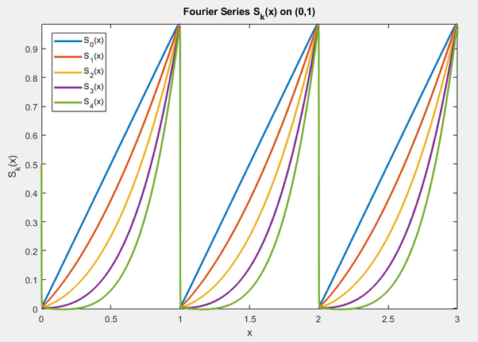

What is the value of
$$ \sum_{r=1}^{x}r^k$$
for non-negative integers $k,x$?
Let $k,x$ be non-negative integers then the question is posed in summation form as
$$ S_{k}(x) = \sum_{r=1}^{x}r^k $$
Johnson’s integral recurrence to the sum of powers, with a seed $S_{0}(x) = x$ is expressed as, letting $B_{k}$ index the Bernoulli numbers (taking $B_{1}=+\frac{1}{2}$)
$$\begin{aligned} S_{k}(x) &= k\int_{0}^{x}S_{k-1}(\tau)d\tau + (1 - k\int_{0}^{1}S_{k-1}(\tau)d\tau)x
\\ &= k\int_{0}^{x}S_{k-1}(\tau)d\tau + B_{k}x. \end{aligned} $$
Assembling the above as a summation directly gives a version of Faulhaber’s formula
$$ S_{k}(x) = \sum_{v=0}^{k}\frac{B_{v}}{v!}\frac{k!}{(k-v+1)!}x^{k-v+1}.$$
For instance, letting $k=4$ we have
$$\begin{aligned} S_{4}(x) &= \frac{B_{0}}{0!}\frac{4!}{5!}x^5 + \frac{B_{1}}{1!}\frac{4!}{4!}x^4 + \frac{B_{2}}{2!}\frac{4!}{3!}x^3 + \frac{B_{3}}{3!}\frac{4!}{2!}x^2 + \frac{B_{4}}{4!}\frac{4!}{1!}x
\\ &= \frac{1}{0!}\frac{4!}{5!}x^5 + \frac{1/2}{1!}\frac{4!}{4!}x^4 + \frac{1/6}{2!}\frac{4!}{3!}x^3 + \frac{0}{3!}\frac{4!}{2!}x^2 + \frac{-1/30}{4!}\frac{4!}{1!}x
\\ &= \frac{1}{5}x^5 + \frac{1}{2}x^4 + \frac{1}{3}x^3 - \frac{1}{30}x .\end{aligned} $$
The first few polynomials of the sequence are given as
$$\begin{aligned} S_{0}(x) &= x
\\ S_{1}(x) &= \frac{1}{2}x + \frac{1}{2}x^2
\\ S_{2}(x) &= \frac{1}{6}x + \frac{1}{2}x^2 + \frac{1}{3}x^3
\\ S_{3}(x) &= \frac{1}{4}x^2 + \frac{1}{2}x^3 + \frac{1}{4}x^4
\\ S_{4}(x) &= -\frac{1}{30}x + \frac{1}{3}x^3 + \frac{1}{2}x^4 + \frac{1}{5}x^5 \end{aligned} $$
Now, hoping to discover a pattern, we wish to expand any of $S_{k}(x)$ in complex Fourier series over $0 < x < 1$ assuming $S_{k}(x+1)=S_{k}(x)$. That is for
$$ S_{k}(x) = \sum_{v=1}^{k+1}c_{k}[v]x^v = \sum_{n=-\infty}^{+\infty}Q_{k}[n]e^{2\pi inx}, $$
$$Q_{k}[n] = \begin{cases} \displaystyle \int_{0}^{1}S_{k}(x)e^{-2\pi inx}dx, & n \neq 0 \\ \displaystyle \int_{0}^{1}S_{k}(x)dx,& n=0. \end{cases} $$
Letting $\Delta_{v,l} = -\frac{v!}{(v-l+1)!}$ and $z_{n} = \frac{1}{2\pi in}$, by integration by parts, recursion, and superposition of monomials we have
$$\begin{aligned} Q_{k}[n] &= \begin{cases} \displaystyle \sum_{v=1}^{k+1}c_{k}[v]\sum_{l=1}^{v}\Delta_{v,l}z_{n}^{l}, & n \neq 0 \\ \displaystyle \sum_{v=1}^{k+1}c_{k}[v]\frac{1}{v+1}, & n=0 \end{cases}
\\ &= \begin{cases} \displaystyle \sum_{j=1}^{k+1}d_{k}[j]z_{n}^{j}, & n \neq 0 \\ \displaystyle d_{k}[0], & n=0 \end{cases} \end{aligned} $$
In matrix form the above double summation assembles via an upper triangular transformation matrix as
$$ \begin{bmatrix} d_{k}[1] \\ ... \\ d_{k}[k-1] \\ d_{k}[k] \\ d_{k}[k+1] \end{bmatrix}
= \begin{bmatrix} \Delta_{1,1} && ... && \Delta_{k-1,1} && \Delta_{k,1} && \Delta_{k+1,1}
\\ ... && ... && ... && ... && ...
\\ 0 && ... && \Delta_{k-1,k-1} && \Delta_{k,k-1} && \Delta_{k+1,k-1}
\\ 0 && ... && 0 && \Delta_{k,k} && \Delta_{k+1,k}
\\ 0 && ... && 0 && 0 && \Delta_{k+1,k+1} \end{bmatrix}
\begin{bmatrix} c_{k}[1] \\ ... \\ c_{k}[k-1] \\ c_{k}[k] \\ c_{k}[k+1] \end{bmatrix}. $$
The first few Fourier expansions are then found as
$$\begin{aligned} Q_{0}[n] &= \begin{cases} -z_{n}, & n \neq 0 \\ \frac{1}{2}, & n=0 \end{cases}
\\ Q_{1}[n] &= \begin{cases} -z_{n}-z_{n}^2, & n \neq 0 \\ \frac{5}{12}, & n=0 \end{cases}
\\ Q_{2}[n] &= \begin{cases} -z_{n}-2z_{n}^2-2z_{n}^3, & n \neq 0 \\ \frac{1}{3}, & n=0 \end{cases}
\\ Q_{3}[n] &= \begin{cases} -z_{n}-3z_{n}^2-6z_{n}^3-6z_{n}^4, & n \neq 0 \\ \frac{31}{120}, & n=0 \end{cases}
\\ Q_{4}[n] &= \begin{cases} -z_{n}-4z_{n}^2-12z_{n}^3-24z_{n}^4-24z_{n}^5, & n \neq 0 \\ \frac{1}{5}, & n=0. \end{cases} \end{aligned} $$

Noticing the falling factorial form we have
$$ d_{k}[j>0] = -\frac{k!}{(k-j+1)!}. $$
Recognize that $S_{k}(0) = 0$ so we already know $c_{k}[0]=0$ thus we can ignore $d_{k}[0]$ (plus its pattern is not at all obvious). By inversion of the matrix we return $\sum_{v=1}^{k+1}c_{k}[v]x^v$.
For instance, letting $k=4$ we have by back substitution
$$\begin{bmatrix} -\frac{1}{30} \\ 0 \\ \frac{1}{3} \\ \frac{1}{2} \\ \frac{1}{5} \end{bmatrix}
= \begin{bmatrix} -1 && -1 && -1 && -1 && -1 \\ 0 && -2 && -3 && -4 && -5
\\ 0 && 0 && -6 && -12 && -20 \\ 0 && 0 && 0 && -24 && -60
\\ 0 && 0 && 0 && 0 && -120 \end{bmatrix}^{-1}
\begin{bmatrix} -1 \\ -4 \\ -12 \\ -24 \\ -24 \end{bmatrix}, $$
$$ S_{4}(x) = \frac{1}{5}x^5 + \frac{1}{2}x^4 + \frac{1}{3}x^3 - \frac{1}{30}x . $$
Or for instance, letting $k=6$ we have by back substitution
$$ \begin{bmatrix} \frac{1}{42} \\ 0 \\ -\frac{1}{6} \\ 0 \\ \frac{1}{2} \\ \frac{1}{2} \\ \frac{1}{7} \end{bmatrix}
= \begin{bmatrix} -1 && -1 && -1 && -1 && -1 && -1 && -1
\\ 0 && -2 && -3 && -4 && -5 && -6 && -7
\\ 0 && 0 && -6 && -12 && -20 && -30 && -42
\\ 0 && 0 && 0 && -24 && -60 && -120 && -210
\\ 0 && 0 && 0 && 0 && -120 && -360 && -840
\\ 0 && 0 && 0 && 0 && 0 && -720 && -2520
\\ 0 && 0 && 0 && 0 && 0 && 0 && -5040 \end{bmatrix}^{-1}
\begin{bmatrix} -1 \\ -6 \\ -30 \\ -120 \\ -360 \\ -720 \\ -720 \end{bmatrix}, $$
$$S_{6}(x) = \frac{1}{7}x^7 + \frac{1}{2}x^6 + \frac{1}{2}x^5 - \frac{1}{6}x^3 + \frac{1}{42}x . $$